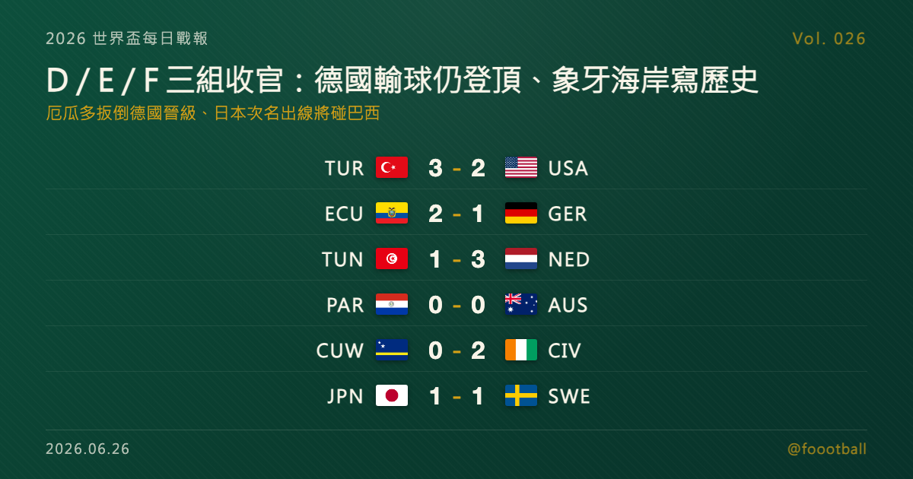

德國輸球仍奪 E 組頭名、象牙海岸寫隊史首進淘汰賽；D／E／F 三組末輪同日收官
2026 世界盃 D、E、F 三組末輪同日收官。德國末戰雖 1-2 不敵厄瓜多，仍靠淨勝球力壓象牙海岸奪下 E 組頭名晉級，象牙海岸則以小組第二寫下隊史首度闖進世界盃淘汰賽；美國早已鎖定 D 組首名，土耳其靠艾漢第 90+8 分鐘絕殺拿下本屆唯一一勝卻仍墊底出局。F 組荷蘭 3-1 勝突尼西亞奪冠，日本以次名出線、淘汰賽首輪將對上巴西。

2026 世界盃每日戰報 Vol. 026｜小組賽｜D／E／F 三組末輪賽果
§1 即時比分戰報
2026 世界盃小組賽進入 D、E、F 三組的末輪，六場比賽同日落幕、三組名次全數底定。最戲劇性的一幕在洛杉磯 SoFi Stadium——已提前鎖定 D 組頭名的美國，被土耳其在第 90+8 分鐘由卡安・艾漢（Kaan Ayhan）絕殺、3-2 逆轉，土耳其拿下本屆唯一一勝卻仍小組墊底出局。E 組則上演「輸球贏組」的反差：厄瓜多 2-1 扳倒四屆冠軍德國，但德國靠前兩戰累積的 +6 淨勝球，仍力壓同分的象牙海岸奪下小組第一；同組象牙海岸靠佩佩梅開二度 2-0 力克庫拉索，隊史首度闖進世界盃淘汰賽。F 組荷蘭 3-1 擊敗突尼西亞奪冠，日本與瑞典 1-1 言和、以小組第二出線，淘汰賽首輪將碰上巴西。以下是本輪六場賽果：
| 賽事 | 比分 | 場館 | 焦點 |
|---|---|---|---|
| 🇹🇷 土耳其 — 🇺🇸 美國 | 3 - 2 | 洛杉磯 SoFi Stadium | 特拉斯蒂 3'（USA）、居萊爾 10'、柯克曲 31'、貝爾哈特 49'（USA）、艾漢 90+8' 絕殺；美國仍以 D 組頭名晉級 |
| 🇪🇨 厄瓜多 — 🇩🇪 德國 | 2 - 1 | 紐澤西 MetLife Stadium | 薩內 2'（GER）、安古洛 7'、普拉塔 77'；厄瓜多逆轉、德國仍奪 E 組第一 |
| 🇨🇼 庫拉索 — 🇨🇮 象牙海岸 | 0 - 2 | 費城 Lincoln Financial Field | 佩佩 7'＋64'（梅開二度）；象牙海岸隊史首進淘汰賽 |
| 🇹🇳 突尼西亞 — 🇳🇱 荷蘭 | 1 - 3 | 堪薩斯城 Arrowhead Stadium | 斯基里 3' 烏龍、布羅貝 7'、梅斯圖里 54'、范海克 62'；荷蘭奪 F 組第一 |
| 🇯🇵 日本 — 🇸🇪 瑞典 | 1 - 1 | 阿靈頓 AT&T Stadium | 前田大然 56'、埃蘭加 62'；日本次名出線、淘汰賽碰巴西 |
| 🇵🇾 巴拉圭 — 🇦🇺 澳洲 | 0 - 0 | 聖塔克拉拉 Levi's Stadium | 互交白卷；澳洲第二晉級、巴拉圭最佳第三名競爭 |
六場分屬 D、E、F 三組末輪。三組頭名各由美國、德國、荷蘭收下，澳洲、象牙海岸、日本分居各組第二、確定晉級淘汰賽。巴拉圭、厄瓜多、瑞典三支小組第三均拿 4 分；其中厄瓜多與瑞典已確定以最佳第三名搭上 32 強，巴拉圭則暫居有利位置、須待 G 至 L 各組末輪打完才能拍板。§2 是三組最終排名，§4 則聚焦今晚最跌宕的 E 組——一支巨人輸了球卻贏了小組，兩支新軍同日寫進隊史。
§2 排行榜區：D／E／F 三組末輪收官
本屆晉級規則：12 個小組、每組前兩名加上 8 個最佳第三名，共 32 隊晉級淘汰賽。D、E、F 三組已全部踢完，各組前兩名確定晉級，第三名則視最佳第三名競爭情形而定。
D 組（末輪打完）——美國前兩戰全勝、早早鎖定頭名，末輪即便 2-3 不敵土耳其仍以 6 分奪冠；澳洲與巴拉圭同積 4 分，澳洲靠較佳淨勝球（0 對 -2）搶下第二、確定晉級，巴拉圭以小組第三暫居最佳第三名競爭的有利位置；土耳其雖在末輪絕殺奪本屆首勝，仍以 3 分墊底出局：
| # | 球隊 | 賽 | 勝 | 和 | 負 | 進 | 失 | 差 | 分 |
|---|---|---|---|---|---|---|---|---|---|
| 1 | 🇺🇸 美國 | 3 | 2 | 0 | 1 | 8 | 4 | +4 | 6 |
| 2 | 🇦🇺 澳洲 | 3 | 1 | 1 | 1 | 2 | 2 | +0 | 4 |
| 3 | 🇵🇾 巴拉圭 | 3 | 1 | 1 | 1 | 2 | 4 | -2 | 4 |
| 4 | 🇹🇷 土耳其 | 3 | 1 | 0 | 2 | 3 | 5 | -2 | 3 |
E 組（末輪打完）——德國與象牙海岸同積 6 分，德國憑藉首兩戰的火力（7-1 庫拉索、2-1 象牙海岸）累積淨勝球 +6，雖末輪不敵厄瓜多，仍以淨勝球力壓象牙海岸（+2）奪下小組第一；象牙海岸以第二名寫下隊史首度晉級淘汰賽；厄瓜多 4 分排名第三、已確定以最佳第三名晉級；庫拉索 1 分墊底：
| # | 球隊 | 賽 | 勝 | 和 | 負 | 進 | 失 | 差 | 分 |
|---|---|---|---|---|---|---|---|---|---|
| 1 | 🇩🇪 德國 | 3 | 2 | 0 | 1 | 10 | 4 | +6 | 6 |
| 2 | 🇨🇮 象牙海岸 | 3 | 2 | 0 | 1 | 4 | 2 | +2 | 6 |
| 3 | 🇪🇨 厄瓜多 | 3 | 1 | 1 | 1 | 2 | 2 | +0 | 4 |
| 4 | 🇨🇼 庫拉索 | 3 | 0 | 1 | 2 | 1 | 9 | -8 | 1 |
F 組（末輪打完）——荷蘭兩勝一和、7 分強勢奪冠；日本一勝兩和、5 分排名第二，確定以小組次名晉級；瑞典 4 分排名第三、已確定以最佳第三名晉級；突尼西亞三戰全敗、一分未取墊底出局：
| # | 球隊 | 賽 | 勝 | 和 | 負 | 進 | 失 | 差 | 分 |
|---|---|---|---|---|---|---|---|---|---|
| 1 | 🇳🇱 荷蘭 | 3 | 2 | 1 | 0 | 10 | 4 | +6 | 7 |
| 2 | 🇯🇵 日本 | 3 | 1 | 2 | 0 | 7 | 3 | +4 | 5 |
| 3 | 🇸🇪 瑞典 | 3 | 1 | 1 | 1 | 7 | 7 | +0 | 4 |
| 4 | 🇹🇳 突尼西亞 | 3 | 0 | 0 | 3 | 2 | 12 | -10 | 0 |
D、E、F 三組的第三名——巴拉圭、厄瓜多、瑞典——全數拿下 4 分。其中厄瓜多與瑞典已確定以最佳第三名晉級 32 強；巴拉圭（淨勝球 -2）則仍處競爭的有利位置，與先前 A、B、C 三組的波赫（4 分）同列領先群，最終能否搭上末班車，仍要待 G 至 L 六組末輪全部結束才能拍板。
§3 賽事摘要
- 土耳其 3-2 美國：本日進球最多、戲劇張力最足的一戰。美國由特拉斯蒂（Auston Trusty）第 3 分鐘率先破門領先，但土耳其隨即反撲——居萊爾（Arda Güler）第 10 分鐘扳平、柯克曲（Orkun Kökcü）第 31 分鐘反超，上半場以 2-1 領先。下半場美國由貝爾哈特（Sebastian Berhalter）第 49 分鐘扳平 2-2，眼看將以平局收場，卻在第 90+8 分鐘被卡安・艾漢（Kaan Ayhan）的絕殺擊沉。由於美國前兩戰全勝、早已鎖定 D 組頭名，這場敗仗無損其小組第一的晉級資格；土耳其則拿下本屆唯一一勝，但 3 分墊底、無緣晉級。
- 厄瓜多 2-1 德國：全日最大反差。德國由薩內（Leroy Sané）第 2 分鐘閃電破門先馳得點，但厄瓜多隨即由安古洛（Nilson Angulo）第 7 分鐘扳平，下半場普拉塔（Plata）第 77 分鐘攻入致勝球完成逆轉。不過德國前兩戰已手握 6 分、淨勝球高居 E 組之冠，即便落敗仍以小組第一晉級；厄瓜多則靠這場勝利累積 4 分、以小組第三確定晉級，睽違 20 年（上一次為 2006 年）重返世界盃淘汰賽。
- 庫拉索 0-2 象牙海岸：象牙海岸寫下隊史新頁。前阿森納前鋒佩佩（Nicolas Pépé）第 7 分鐘、第 64 分鐘梅開二度，助球隊 2-0 完勝庫拉索、以 E 組第二晉級——這是象牙海岸繼 2006、2010、2014 三度止步小組賽後，隊史首度闖進世界盃淘汰賽。加勒比海黑馬庫拉索則以 1 分墊底出局，但其首次世界盃之旅已超出預期。
- 突尼西亞 1-3 荷蘭：荷蘭強勢收官。開賽第 3 分鐘斯基里（Ellyes Skhiri）自擺烏龍送禮，布羅貝（Brian Brobbey）第 7 分鐘再下一城，荷蘭迅速 2-0 領先；梅斯圖里（Hazem Mastouri）第 54 分鐘為突尼西亞扳回一球，但范海克（Jan Paul van Hecke）第 62 分鐘的進球鎖定 3-1 勝局。荷蘭兩勝一和、7 分奪下 F 組第一；突尼西亞三戰全敗、一分未取，小組墊底出局。
- 日本 1-1 瑞典：一場各取所需的平局。日本由前田大然第 56 分鐘的進球先馳得點，瑞典隨即由埃蘭加（Anthony Elanga）第 62 分鐘扳平。最終雙方 1-1 言和，日本以一勝兩和、5 分鎖定 F 組第二、確定晉級淘汰賽，首輪將對上 C 組頭名巴西；瑞典則以 4 分排名第三、同樣確定以最佳第三名晉級。
- 巴拉圭 0-0 澳洲：互交白卷的務實平局。澳洲靠這 1 分鎖定 D 組第二、確定晉級淘汰賽；巴拉圭則以 4 分排名小組第三，保住最佳第三名競爭的有利身位。雖然場面缺乏進球，對兩隊而言，這仍是一場各自接近目標的結果。
§4 焦點觀察｜輸了球、贏了小組：E 組末輪的三條故事線
如果今晚只能看一組，那一定是 E 組。短短九十分鐘裡，它同時上演了「巨人踉蹌」與「兩支新軍寫歷史」兩種劇本。
先說那個最反直覺的結果：德國輸了球，卻贏了小組。面對已無退路的厄瓜多，德國第 2 分鐘就由薩內閃電破門，看似要輕鬆收官；但厄瓜多隨即扳平、並在第 77 分鐘由普拉塔完成逆轉，2-1 拿下一場象徵意義十足的勝利。只是足球的殘酷與精算在這裡同時體現——德國前兩戰 7-1 血洗庫拉索、2-1 力克象牙海岸，早已把淨勝球堆到 +6，即便末戰落敗，仍以淨勝球壓過同積 6 分的象牙海岸，穩穩奪下 E 組頭名。四屆冠軍用一場敗仗提醒外界：他們的晉級之路並不如比分表看來那般高枕無憂，攻強守弱的隱憂在淘汰賽只會被放大。
另一邊，輸了大半場主動權卻拿下勝利的厄瓜多，反而踢出了全隊的志氣。這場勝利讓他們累積到 4 分、確定以最佳第三名晉級——對一支上一次踏進世界盃淘汰賽還要追溯到 2006 年（睽違 20 年）的球隊來說，扳倒德國、重返淘汰賽，本身就是一座里程碑。
而 E 組真正的歷史主角，是象牙海岸。前阿森納前鋒佩佩梅開二度，率隊 2-0 完勝庫拉索、以小組第二出線。這是象牙海岸在 2006、2010、2014 三度倒在小組賽後，隊史首度闖進世界盃淘汰賽——德羅巴一代未竟的夢，由這支球隊在美加墨的土地上接棒完成。同組墊底的庫拉索雖然出局，但作為史上人口最少的世界盃參賽地之一，他們的首航本身已是一則動人的故事。
一支巨人帶著警訊前進、一支老牌勁旅扳倒豪門、一支非洲球隊終於跨過門檻——E 組用一個夜晚，把世界盃小組賽最迷人的張力濃縮到了極致。
§5 接下來看點
A 至 F 六組全數收官後，小組賽的最後懸念落到 G、H、I、J、K、L 六組的末輪。其中星光最盛的兩組分別是 K 組的哥倫比亞對葡萄牙——C 羅恐怕生涯最後一屆世界盃的小組壓軸，以及 J 組的約旦對阿根廷——衛冕熱門與梅西能否以全勝收官備受矚目；I 組挪威對法國、哈蘭德與姆巴佩的金靴對飆，H 組烏拉圭對西班牙的歐美強強對話，同樣是重頭戲。這六組打完後，32 強淘汰賽的對戰圖才會完整成形，最佳第三名的 8 張門票也將全部發完。目前已確定的對位包括：日本首輪將對上巴西、荷蘭則碰上摩洛哥；其餘籤表，Vol. 027 接著報。
常見問題
Q：德國被厄瓜多打敗了，為什麼還能晉級、甚至拿小組第一？ A：因為小組排名看的是三場總積分與淨勝球，不是單場勝負。德國前兩戰 7-1 大勝庫拉索、2-1 擊敗象牙海岸，已累積 6 分與 +6 淨勝球；末戰雖 1-2 不敵厄瓜多，仍以淨勝球力壓同積 6 分、+2 的象牙海岸，奪下 E 組頭名晉級。
Q：D、E、F 三組哪些球隊晉級、哪些出局？ A：各組前兩名確定晉級——美國與澳洲（D）、德國與象牙海岸（E）、荷蘭與日本（F）；其中象牙海岸寫下隊史首度晉級世界盃淘汰賽。土耳其、庫拉索、突尼西亞小組墊底出局。三支小組第三均拿 4 分，其中厄瓜多與瑞典已確定以最佳第三名晉級，巴拉圭則仍待 G 至 L 各組末輪結束才能確認。
Q：日本晉級了嗎？淘汰賽對手是誰？ A：日本以一勝兩和、5 分拿下 F 組第二，確定晉級 32 強。依賽制，F 組第二名對上 C 組頭名，因此日本淘汰賽首輪的對手是巴西。
Tags: 世界盃, 2026世界盃, 德國, 象牙海岸, 日本, 厄瓜多